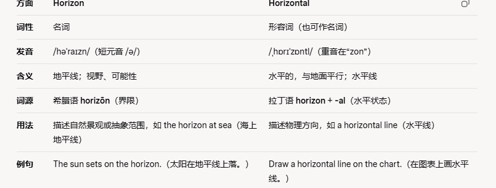
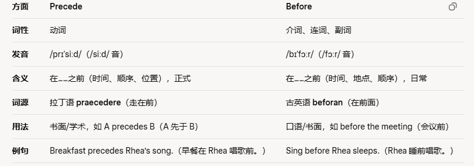

delicate adj.精美的;精密的;易碎的;纤弱的
Paper cuts are a delicate form of decoration popular in China剪纸是一种精美的装饰形式，在中国很流行。
the delicate mechanisms (/ˈmek.ə.nɪ.zəm/机械部件；机械装置)of a clock钟表的精密装置
共 49 个词条 · 2 张附图（含音标截图）
delicate adj.精美的;精密的;易碎的;纤弱的
Paper cuts are a delicate form of decoration popular in China剪纸是一种精美的装饰形式，在中国很流行。
the delicate mechanisms (/ˈmek.ə.nɪ.zəm/机械部件；机械装置)of a clock钟表的精密装置
pitfall n.陷阱，圈套;缺陷
One of the major pitfalls of the whole project was the lack of a good marketing strategy.整个项目的主要缺陷之一是缺少优秀的营销策略。
the potential pitfalls of buying a house购买房屋可能遇到的圈套
beforehand adv.事先;预先
If you want to make good Chinese food at home, you need to find a decent(/ˈdiː.sənt/正派的；体面的，正经的；像样的，相当不错的) recipe book and get the right ingredients beforehand如果你想在家里做出美味的中餐，那么你需要一本不错的食谱并提前准备好需要的食材。
two weeks beforehand 提前两周
in advance 提前，事先
intend v.打算;想要 就是want
He did not intend to be rude, but sometimes he just said the wrong thing.他并不是有意无礼，但有时候他会说错话。
intend to do 想要做某事
intention n.目的;意义
intentional adj.故意的;有目的的
extrovert /ˈek.strə.vɜːt/ n.性格外向者 adj.外向的，活泼的
Unlike her introverted sister, she was an outgoing(（人）开朗的，外向的，友好的，爱交际的, 离开的;即将离职的，即将卸任的;即将结业的) and sociable extrovert.与内向的姐姐不同，她是一个开朗、乐于交际、性格外向的人。
his extrovert personality 他外向的个性
introvert n.性格内向者 adj.内向的
Now my extrovert behaviour is spontaneous(/spɒnˈteɪ.ni.əs/自发的;非筹划安排的;非勉强的).现在我外向的行为是自发的。
census n.人口普查，人口调查;统计，调查
The census results showed that there was a declining birthrate.人口普查结果显示出生率正在下降。
the latest census最新的人口普查
bind /baɪnd/ v.捆绑，系;(使)黏合;使结合
He used a strong adhesive（/ədˈhiː.sɪv/黏合剂，黏着剂。adhere就是粘的意思） to bind the broken pieces of the vase（/vɑːz/） back together.他用强力黏合剂把花瓶的碎片重新粘在一起。
bind up his wounds（/wuːnd/（身体上的）伤，伤口） 把他的伤口包扎好
In their active state, phytochrome molecules（/ˈmɒl.ɪ.kjuːl/分子） bind themselves to DNA to restrict plant growth.植物色素分子在其活跃状态下会与DNA结合，从而限制植物的生长。
emission n.发射，散发;排放;喷射
There are a number of new technologies designed to reduce emissions from motor vehicles有许多新技术旨在减少机动车的废气排放。
the emission of carbon dioxide into the atmosphere向大气中排放二氧化碳
emit v.发出，散发 e=向外，mit=send，向往send=发出散发
sacrifice /ˈsæk.rɪ.faɪs/ n.牺牲;供奉v.牺牲;奉献
Sometimes you have to sacrifice your time and energy if you want a successful career.如果你想事业成功，有时候你不得不牺牲自己的时间和精力。
no sacrifice of quality 没有牺牲质量
If successfully implemented, proponents claim, vertical farms offer the promise (/ˈprɒm.ɪs/)of urban renewal, sustainable (/səˈsteɪ.nə.bəl/可持续的，能长期保持的)production of a safe and varied food supply (through year-round production of all crops), and the eventual repair of ecosystems that have been sacrificed for horizontal(/ˌhɒrɪˈzɒntl/) farming.支持者们称，如果成功实施，垂直农场会带来城市复苏的希望并持续提供安全多样的食物供应(通过整年生产所有谷物)，且最终修复由于水平农业而造成损害的生态系统。

区别：
Horizon /həˈraɪzn/：
名词，指地平线（自然景观）或视野（抽象概念）。用于描述天地交界或拓展可能性。
例：The horizon in Auckland is stunning.
Horizontal /ˌhɒrɪˈzɒntl/：
形容词，指与地面平行的状态，强调几何方向。
用于物理描述（如线、平面）或图表。
例：The horizontal axis shows time.（横轴显示时间。）
inhibit /ɪnˈhɪb.ɪt/ v.禁止;抑制
A lack of oxygen may inhibit brain development in young children.缺氧可能会抑制幼儿的大脑发育。
inhibit plant growth 抑制植物生长
inhibition n.抑制;压抑
smooth adj.顺利的;光滑的;平稳的
When the lake freezes in winter it becomes as smooth as glass.当湖面在冬天结冰时，它变得像玻璃一般光滑
make a smooth landing 平稳降落
a lotion（/ˈləʊ.ʃən/护肤油，润肤露） to make your skin feel soft and smooth能使皮肤柔软光滑的护肤液
rough /rʌf/ adj.粗糙的;不平的
exhale /eksˈheɪl/ v.呼气;散发出
After holding her breath underwater, she finally surfaced and exhaled deeply.在水下屏住呼吸之后，她终于浮出水面，深呼一口气。
hold your breath for a moment and exhale 屏息一会儿然后呼气
inhale v.吸入，吸气
holistic /həˈlɪs.tɪk/ adj.整体的;全盘的 来自于whole
Chinese medicine takes a holistic approach to disease where the whole mind and body is treated.中医采取整体性的方法来治疗疾病，使身心都能够被治愈。
holistic medicine 整体医学
partial adj.部分的
focus n.焦点;中心v.集中，关注;聚焦
The main focus of his presentation was the revenue in the past quarter, but he also touched upon plans for the coming financial year.他的演讲主要聚焦于上个季度的收入，但他也谈到了下个财年的计划。
focus on 集中于;聚焦于
concentrate v.聚焦
focus on the power of suggestion 关注暗示的力量
revenue收入，profit 利润
hypnosis /hɪpˈnəʊ.sɪs/ n.催眠;催眠状态
Hypnosis can be a good way to help you give up smoking or increase your positivity(/ˌpɒz.əˈtɪv.ə.ti/)催眠可以帮助你戒烟或提高你的积极性。
under hypnosis 在催眠状态下
Lozanov experimented with teaching by direct suggestion during sleep, hypnosis and trance(/trɑːns/昏睡状态;催眠状态) states, but found such procedures unnecessary.
Lozanov试验过在睡眠状态下、催眠状态下或精神恍惚之际给出直接暗示的教学法结果发现这些过程都是没有必要的。
积极的 Positive 积极地 Positively
tempt v.引诱，诱惑
The aroma(/əˈrəʊ.mə/（通常指食物、饮料的）香味，香气，芳香) of freshly baked cookies tempted him to enter the cake shop.刚烤好的饼干的香味诱使他走进蛋糕店。
tempt thieves by leaving valuables clearly visible把贵重物品放在显眼处招来小偷
temptation n.引诱，诱惑
painstaking /ˈpeɪnzˌteɪ.kɪŋ/ adj. 艰苦的; 勤勉的
It took months of painstaking effort to complete the research.完成这项研究花费了几个月艰苦卓绝的努力。painstaking research 细心的研究
painstaking effort 艰苦的努力
document /ˈdɒk.jə.mənt/ 文件;文档
It's wise to keep all of your important documents in a safe or filing cabinet.把你所有的重要文件都放在保险箱或文件柜里是明智的。
legal documents 法律文件
documentary n.纪录片 adj.记录的
erode v.腐蚀，侵蚀;削弱，损害
The sea washed against the rocks of the cliff and gradually eroded them until they were smooth stones.海水冲刷着悬崖上的岩石，渐渐地把它们侵蚀成光滑的石头。
erode his authority 削弱他的权威
erosion n.侵蚀;腐蚀
worthwhile adj.值得的;重要的;有价值的
It's a worthwhile investment to consider saving money in a special savings account.考虑将钱存入一个特殊的储蓄账户是一项值得做的投资
a worthwhile cause 一项有意义的事业
The reduction in bullying（/ˈbʊl.i.ɪŋ/伤害;胁迫;欺负，欺凌） and the consequent improvement in pupil （/ˈpjuː.pəl/学生，（尤指）小学生）happiness——is surely a worthwhile objective.霸凌行为的减少以及随之而来的儿童幸福感提升必然是一个值得追求的目标。
contain v.包含;容纳
This dessert (/dɪˈzɜːt/)contains nuts, so some people might be allergic(/əˈlɜː.dʒɪk/) to it.这种甜点含有坚果，因此有些人可能对它过敏。
contain one or two inaccuracies 有一两处不准确
container n.容器
precede v.领先，在前面
Those types of clouds usually precede the arrival of low pressure weather systems这种类型的云通常在低气压天气到来之前出现。
the years preceding the war 战前的几年
precede 在……之前（时间、顺序、位置）：指某事件、事物或人在时间、空间或重要性上先于另一者。
before 在……之前：泛指时间、空间或顺序上的“先前”，用法灵活，口语和书面均常见。

waist n.腰;(衣服的)腰部
She tightened the belt around her waist, ensuring a secure and comfortable fit.她系紧腰间的腰带，确保其安全舒适。
a jacket with a high waist 一件高腰身的上衣
a skirt with an elasticated waist 一条腰部有松紧带的裙子
trait n.特性;特点;品质
His most outstanding character trait was his incredible, sharp sense of humour and ability to tell jokes他最突出的性格特点是难以置信的敏锐的幽默感和讲笑话的能力。
personality traits 个性特点
Humans are also highly social, a trait that has been connected to healthier aging.人类也是高度社会化的，这种特质与更健康的衰老过程有关.
eliminate /iˈlɪm.ɪ.neɪt/ v.消除;排除
The policy was aimed at eliminating the problem of inflation through a series of fiscal（/ˈfɪs.kəl/财政的;国库的） measures.这项政策旨在通过一系列财政措施（为什么这里measure是措施呢？）消除通货膨胀问题。
eliminate toxins（/ˈtɒk.sɪn/（尤指致病细菌产生的）毒素） from the body 排除体内毒素
elimination n.排除，除去
If the individual knows that he or she can control the noise, this seems to eliminate both its negative effects at the time and its after-effects.
如果这个人知道自己可以控制噪音，或者这就可以消除当时的负面影响和后续影响。
sheer /ʃɪər/ adj.数量大的;纯粹的，完全的;陡峭的
The sheer cliffs stood tall, offering an awe-inspiring view of the deep valley below.陡峭的悬崖高耸着，下面的深谷令人敬畏。
sheer size of the cathedral(/kəˈθiː.drəl/) 大教堂的宏大规模
The sheer scale of manufacture is so huge, and that is the issue.制造业的规模如此之大，这就是问题所在
sheer none sense 纯属胡说八道,完全没道理
limb /lɪm/ n.肢，臂，腿;树枝
The athlete(/ˈæθ.liːt/运动员，擅长运动的人) stretched her leg muscles, feeling the tension release from every limb运动员伸展腿部肌肉，感觉每条腿的紧绷感都得以释放。
an artificial limb 假肢
Experiments showed that, in fact, facial vision is nothing to do with touch or the front of the face, although the sensation(/senˈseɪ.ʃən/感觉;知觉;（尤指）触觉) maybe referred to the front of the face, like the referred pain in a phantom(/ˈfæn.təm/幽灵;鬼魂) limb.
实验表明面感视觉实际上与“感”和“面”没有任何关系，尽管这种感觉可能被认为源自面部正前方，正如幻肢中的牵涉性痛感一样。
bulb /bʌlb/ n.电灯泡;球状物
She planted flower bulbs in the garden, eagerly waiting for them to sprout (/spraʊt/) and blossom.她在花园里种了一些球茎花卉，热切地等待着它们发芽开花。
a room lit(light) by bare bulbs 一间只有光秃秃的电灯泡照明的屋子
Our brains run at slow biochemical processing speeds on the power of a light bulb, and their size is restricted by the dimensions of the human birth canal我们的大脑以一种低生物化学处理速度、用相当于一个灯泡的耗能运行着，而其尺寸也被人类生育通道的尺寸所限制着.
surface n.表面;表层;外观
I've always been into the kind of marine life that lives just below the surface of lagoons(/ləˈɡuːn/泻湖，濒海湖，环礁湖).我一直很喜欢那种生活在泻湖表面下的海洋生物。
an uneven(even是平的，uneven是凹凸不平的) road surface 凹凸不平的路面
Water enters through a pipe, and flows as a thin film between a sheet of double glazing and the surface of a solar panel, where it is heated by the sun.水通过管道流入，在双层玻璃片和太阳能电池板面之间形成的薄膜状空间里流动，此时的水由太阳能加热。
refrain v.克制，避免n.叠句;副歌
The catchy (/ˈkætʃ.i/（尤指曲调或歌曲）动听易记的，琅琅上口的) chorus (/ˈkɔː.rəs/)made everyone hum(/hʌm/发出连续低沉的声音，嗡嗡作响) and sing along to the refrain. 朗朗上口的合唱让每个人都跟着副歌哼唱起来。
refrain from smoking 不要吸烟
curb v./n.控制，抑制
The city implemented measures to curb excessive water usage during the drought.该市在干旱期间采取措施控制过度用水。
curbed one's temper 控制脾气
In the short term it might curb the growth in road transport through the better loading ratio of goods vehicles and occupancy (occupy)rates of passenger vehicles expected as a result of the increase in the price of transport.运输价格上涨预计会带来货运车辆更好的荷载比例以及客运车辆更合理的载客率，短期内这或许可以控制公路运输的增长。
flaw n.瑕疵，缺点;裂缝
The only flaw in the design was that the handle（不是处理啊） of the new device was in an awkward (/ˈɔː.kwəd/难用的；棘手的；难处理的，难对付的)position.设计上的唯一缺陷是新设备的手柄处于一个尴尬的位置。
a number of crucial flaws 很多关键性的问题
defect n.缺点 注意这个不是检查啊
fault n.过错，过失
investigate v.调查;研究
The detectives were sent to the scene （/siːn/场景，场面;镜头，（不愉快事件发生的）现场，地点）to investigate the crime.侦探被派到犯罪现场调查这起案件。
investigate the effects of diet(/ˈdaɪ.ət/饮食) on fighting cancer研究饮食的抗癌作用
colony /ˈkɒl.ə.ni/n.殖民地;(动植物)群体，群落 ，一堆什么样的生物
Algeria(/ælˈdʒɪə.ri.ə/) was formerly a French colony before independence was declared （/dɪˈkleəd/）in 1959.阿尔及利亚在1959年宣布独立前曾是法国的殖民地。
former British colonies 前英国殖民地
colonial （/kəˈləʊ.ni.əl/）adj.殖民地的
Giraldo watched how well the ants took care of the young of the colony. Giraldo观察了蚂蚁如何照料种群中的幼蚁。
immune /ɪˈmjuːn/ adj.免疫的;免于...的
After you develop antibodies, you are usually immune to a virus for some time.当你产生抗体后，你通常在一段时间内对病毒有免疫力。
become immune to criticism（/ˈkrɪt.ɪ.sɪ.zəm/） 不在乎批评
become immune to a variety of insecticides（/ɪnˈsek.tɪ.saɪd/） 对各种杀虫剂免疫 cide=杀，insec=虫
comprise v.包含;组成，构成
Women comprise 60% to 65% of the workforce in our company these days.目前我们公司60%到65%的员工都是女性。
comprise a large proportion of those living in poverty(/ˈpɒv.ə.ti/贫困，贫穷)占了贫困人口中的很大比例
immediate adj.立即的;直接的
The injection brought him immediate pain relief after the injury.在受伤之后，通过注射，他的疼痛很快缓解了。
an immediate reaction 即时的反应
an immediate effect 即刻产生的效果
Bakelite was immediately welcomed as a practical and versatile material.人造树胶很快作为一种实用而万能的材料而受人欢迎。
relative /ˈrel.ə.tɪv/ adj. 相对的; 有关的 n. 亲属
I'm a relative newcomer to this city so l am not very familiar with how to get around.对这座城市而言，我是相对新来的人，因此我不太了解如何去各种地方走走。
the position of the sun relative to the earth 太阳与地球的相对位置
relate v.与....有联系
relation n.关系，联系
relationship n.关系，关联
substance n.物质;实质;资产
He enjoyed playing with his home chemistry set——it was full of chemical substances to do experiments with.他喜欢摆弄自己的家用化学用具，里面装满了可以用来做实验的化学物质。
illegal substances 非法物品
substantial adj.大量的;重要的
pile n.一堆，一叠;大量v.堆放;蜂拥，拥挤
The children gleefully（高兴地，兴奋地，欣喜地） jumped into the leaf pile, scattering （/ˈskæt.ər.ɪŋ/分散的少量东西）them everywhere孩子们兴高采烈地跳进树叶堆里，使树叶散得到处都是。
a pile of sand 一堆沙
analysis /əˈnæl.ə.sɪs/ n.分析 analyze这是动词，要记住拼写
His analysis of the situation was very insightful （insight，洞察力）and informative(/ɪnˈfɔː.mə.tɪv/提供信息的；增长见闻的).他对形势的分析非常有见地，且信息丰富。
statistical analysis 统计分析
legitimate /ləˈdʒɪt.ə.mət/注意这个发音 adj.合法的;正当的，合理的
Most scientists believe it is legitimate to use animals in medical research.大多数科学家认为在医学研究中使用动物是合法的。
a legitimate grievance（/ˈɡriː.vəns/不平，委屈;不满，抱怨，牢骚） 合乎情理的抱怨
alloy /ˈæl.ɔɪ/ n.合金 /əˈlɔɪ/ v把….铸成合金
The new alloy material offered greater strength and durability for the construction industry这种新的合金材料为建筑行业提供了更高的强度和耐久性。
an alloy of copper（/ˈkɒp.ər/） and zinc铜和锌的合金
conspicuous /kənˈspɪk.ju.əs/adj.显眼的;显而易见的
Her blonde hair was very conspicuous because everyone else had natural black hair.她的金发非常显眼，因为其他人都是天然的黑发。
a conspicuous success非常成功
obvious adj.明显的
evident adj.明显的
distinct adj. 明显的;不同的;清楚的
inconspicuous adj.不明显的
Schimmelpennink designed conspicuous, sturdy（结实的，牢固的；强壮的） white bikes locked in special racks which could be opened with the chip card-the plan started with 250 bikes, distributed over five stations
Schimmelpennink（这是个人名或者公司名字）设计了醒目坚固的白色自行车，锁在特殊的车架上用芯片卡可以开锁，计划开始时共有250辆自行车，分别布置在五个站
concession /kənˈseʃn] n.让步，妥协;许可，承认
She did not want to compromise with him, but finally, after a short discussion, she made a concession.她不想与他妥协，但最终，经过短暂讨论后，她做出了让步。
an important concession 一次重要的让步
concessional Adverbial Clauses 让步状语从句
auditory adj.听觉的，听力的
He overcame his auditory difficulties after seeing several specialist therapists(/ˈθer.ə.pɪst/治疗师)在看了几位专家医生后，他克服了听觉上的问题。
auditory stimuli 听觉刺激
auditory input 听觉输入
hearing impairment (/ɪmˈpeə.mənt/损伤，损害)or other auditory function deficit（/ˈdef.ɪ.sɪt/赤字;逆差;亏损） in young children幼儿的听力障碍或其他听觉功能缺陷
remnant /ˈrem.nənt/ n.残余部分，残迹 这个词和remain有关
The ancient ruins were the now only remnants of a once-thriving（/ˈθraɪ.vɪŋ/兴旺的，繁荣的） and grand civilization.古代的废墟是曾经繁荣昌盛的文明现存的唯一遗迹。
remnants of a huge forest 大森林剩下的一部分
convention /kənˈven.ʃən/ n.大会，集会；惯例，习俗
The national animated film convention is due to take place in southern China in the autumn of this year.全国动画电影大会将于今年秋天在中国南方举行。
hold a convention 召开大会
conventional adj.传统的;常用的 相当于traditional，考试里面会同义替换。
framework n.框架;结构
The new framework for the proposed tax agreement should be passed by the end of the next government meeting.税收协议的新框架会在下次政府会议结束时通过
a framework for further research 进一步研究的框架
the basic framework of society 社会的基本结构
One of the virtues (/ˈvɜː.tʃuː/美德;高尚品德)of this rich, lucid(/ˈluː.sɪd/清晰的，明了的;（人）头脑清醒的，说话清楚的) and arresting book is that it places the current cult of happiness in a well-defined historical framework.这本内容丰富、逻辑清晰且吸引人的书的优点之一是它将当前对幸福的追求放在一个被界定清晰的历史框架中。